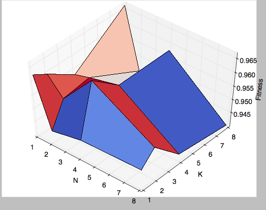
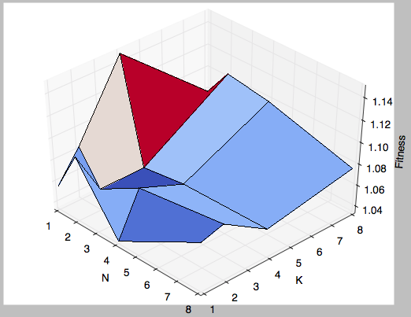
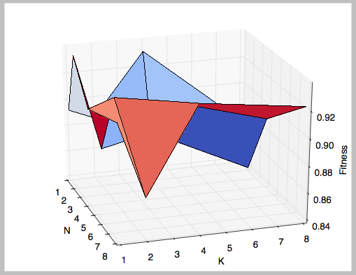
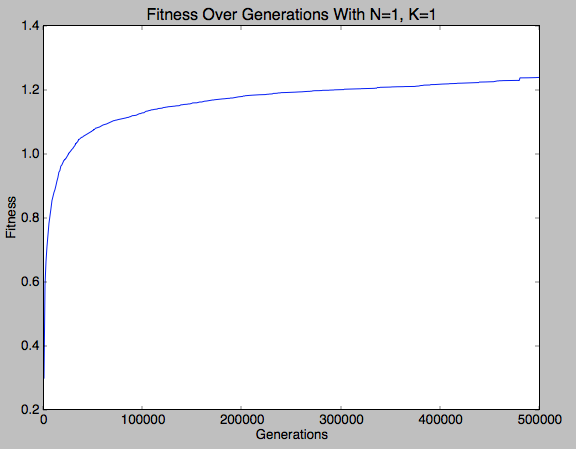
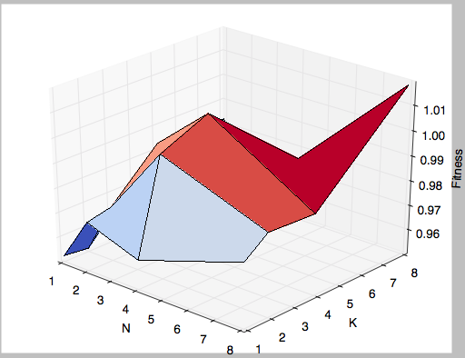

EECS 492 A1 Results
Mickey Chao
September 29, 2015
A1 Results
The purpose of this project is to recreate
Roger
Alsing's work on genetic programming to create art.
The population consists of approximations to a given image.
Each image uses P polygons, where P=100 for the results on this page.
N is the population size and K is the number of new children created per generation.
T is the number of generations displayed in each animation.
The fitness of the image is a measure of how closely it matches the original image.
The learning curve shows how the fitness of the best approximation improves over time.
The 3D graphs depict how the fitness after 25000 generations varies with N and K.
| Original image |
Approximation |
Learning curve |
80×80 pixels
|
P=100, N=1, K=1
 |
 |

N=1, K=8 gave the best result |
|
100×100 pixels
 |
P=100, N=1, K=1
 |
 |

N=1, K=4 gave the best result |
|
64×64 pixels
|
P=100, N=1, K=1
 |
 |

N=2, K=1 gave the best result |
32×32 pixels
 |
P=100, N=1, K=1
 |
 |

N=8, K=8 gave the best result |
96×128 pixels
 |
P=100, N=1, K=1
 |
|
N=1, K=2 gave the best result |
128×128 pixels
|
P=100, N=1, K=1
 |
 (Note: The process exceeded 6 hours on CAEN and was killed before 500000 generations) (Note: The process exceeded 6 hours on CAEN and was killed before 500000 generations) |

N=4, K=2 gave the best result |
N=4, K=1 gave the best result overall after 25000 generations
At office hours, I was advised to use the same mutations as the sample because my images weren't coming out nicely:
- With 1/5 probability, replace a polygon with a random triangle.
- With 1/5 probability, swap the order of two polygons which are in adjacent depth layers.
- With 3/5 probability, mutate an existing polygon:
- With 1/2 probability, alter the color slightly.
- With 1/2 probability, alter the shape of the polygon:
- With 1/3 probability, remove a vertex.
- With 1/3 probability, add a vertex at a random point.
- With 1/3 probability, move a vertex slightly.
However, this did not solve the problem. It turned out I hadn't been using the pygame draw functionality correctly. Unfortunately, it would take several days to regenerate all the animations, so I stuck with these mutations.
Coordinates of vertices were moved in the x, y directions using a Gaussian distribution of mean 0 and standard deviation IMG_WIDTH/5 and IMG_HEIGHT/5 pixels, respectively.
Components of colors (0-255 scale) were altered using a Gaussian distribution of mean 0 and standard deviation 25.
Random triangles were created by picking a point on the image with uniform distribution,
then adding a Gaussian distribution of mean 0 and
standard deviation IMG_WIDTH/10 and IMG_HEIGHT/10 to obtain the (x, y) coordinates of vertices.
Random colors were picked using uniform distribution over the RGB color space.
Parents were selected proportional to their fitness. This was done with a weighted average where if parent i has f_i fitness, and the sum of the fitness over all parents was f, then parent i has probability f_i/f of being selected.